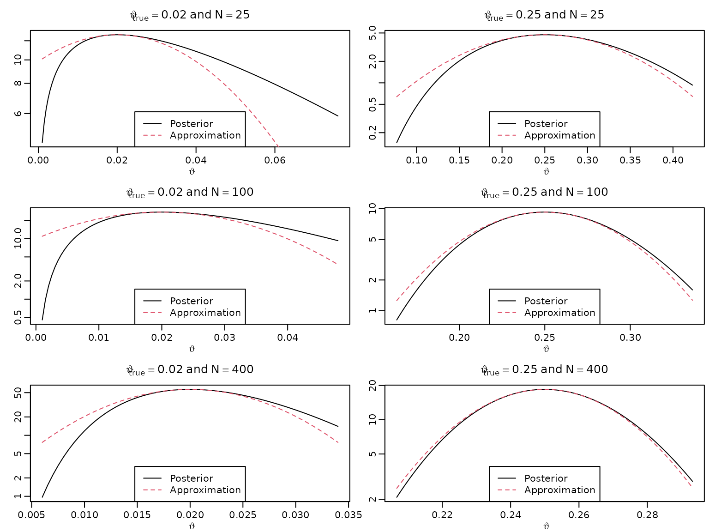
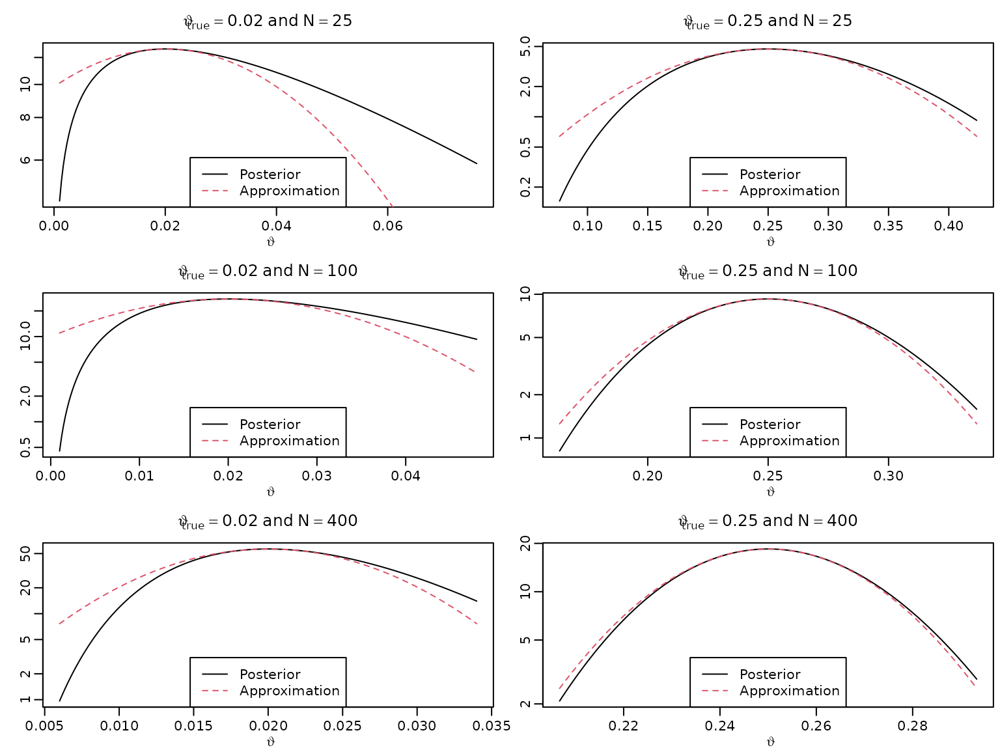

Chapter 5
Chapter05.RmdSection 5.2
Figure 5.1: The adaptive nature of Bayesian learning
We illustrate the adaptive nature of Bayesian learning (also referred to as sequential updating or on-line learning) via the beta-binomial model from earlier.
set.seed(42)
a0 <- 1
b0 <- 1
N <- 100
thetatrue <- c(0, .1, .5)
theta <- seq(0, 1, length.out = 201)
for (i in seq_along(thetatrue)) {
plot(theta, dbeta(theta, a0, b0), type = 'l', ylim = c(0, 11),
col = rgb(0, 0, 0, .2), xlab = expression(vartheta), ylab = '',
main = bquote(vartheta[true] == .(thetatrue[i])))
succ <- fail <- 0L
for (j in seq_len(N)) {
if (rbinom(1, 1, thetatrue[i])) succ <- succ + 1L else fail <- fail + 1L
lines(theta, dbeta(theta, a0 + succ, b0 + fail), col = rgb(0, 0, 0, .2 + .4*j/N))
}
legend('topright', paste("N =", c(0, 20, 40, 60, 80, 100)), lty = 1,
col = rgb(0, 0, 0, .2 + .4*c(0, 20, 40, 60, 80, 100)/N))
}
Section 5.4
Figure 5.2: Bayesian asymptotics 1
To reproduce this figure, we again re-use the theory from Chapter 3 (the beta-binomial model).
thetatrue <- c(0.02, 0.25)
N <- c(25, 100, 400)
theta <- seq(0, 1, .0005)
for (n in N) {
for (p in thetatrue) {
aN <- n*p + 1
bN <- n - n*p + 1
plot(theta, dbeta(theta, aN, bN), type = "l", xlab = expression(vartheta),
ylab = "", main = bquote(vartheta[true] == .(p) ~ "and" ~ N == .(n)),
xlim = c(0, 1.1*sqrt(p)), ylim = c(0, 9.5/sqrt(p + 0.008)))
aN <- n*p + 2
bN <- n - n*p + 4
lines(theta, dbeta(theta, aN, bN), lty = 2, col = 2)
legend("topright", c("Beta(1,1)", "Beta(2,4)"), lty = c(1, 2),
col = 1:2)
}
}
Figure 5.3: Bayesian asymptotics 2
As above, just with higher sample size.
n <- 1000000
for (p in thetatrue) {
aN <- n*p + 1
bN <- n - n*p + 1
asySD <- sqrt(p * (1 - p) / n)
theta <- seq(p - 25*asySD, p + 25*asySD, length.out = 333)
plot(theta, dbeta(theta, aN, bN), type = "l", xlab = expression(vartheta),
ylab = "", main = bquote(vartheta[true] == .(p)))
aN <- n*p + 2
bN <- n - n*p + 4
lines(theta, dbeta(theta, aN, bN), lty = 2, col = 2)
legend("topright", c("Beta(1,1)", "Beta(2,4)"), lty = c(1, 2),
col = 1:2)
}
Figure 5.4: Bayesian asymptotics 3
We now want to approximate the log posteriors via quadratic polynomials and visualize these.
for (n in N) {
for (p in thetatrue) {
aN <- n*p + 1
bN <- n - n*p + 1
asySD <- sqrt(p * (1 - p) / n)
theta <- seq(max(0.001, p - 2*asySD), p + 2*asySD, length.out = 222)
plot(theta, dbeta(theta, aN, bN), type = "l", xlab = expression(vartheta),
ylab = "", main = bquote(vartheta[true] == .(p) ~ "and" ~ N == .(n)),
log = "y")
approx <- function(theta, thetastar, n, log = FALSE) {
res <- dbeta(thetastar, aN, bN, log = TRUE) -
0.5 * n * 1 / (thetastar * (1 - thetastar)) * (theta - thetastar)^2
if (log) res else exp(res)
}
lines(theta, approx(theta, p, n), col = 2, lty = 2)
legend("bottom", c("Posterior", "Approximation"),
lty = c(1, 2), col = 1:2)
}
}